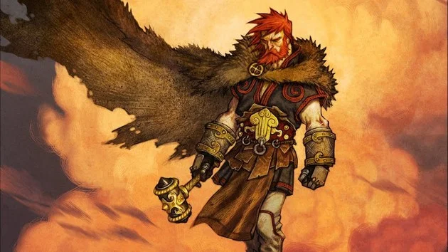
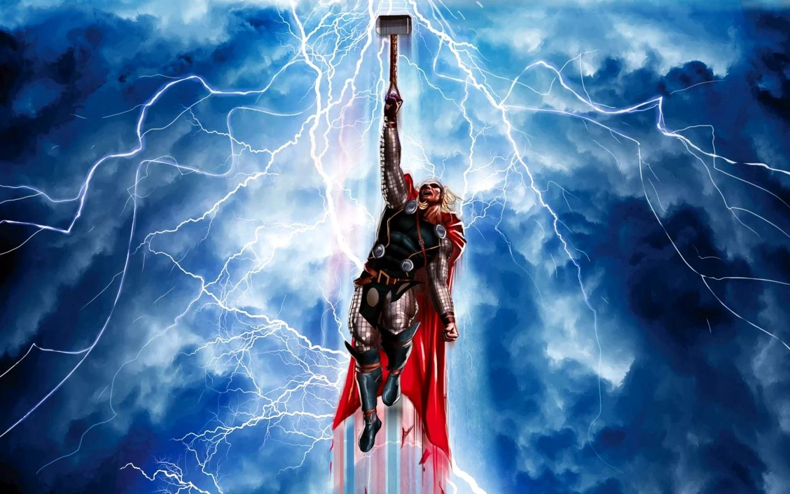

T H O R
 March 14, 2024
March 14, 2024
Thor, o deus do trovão na Mitologia Nórdica ⛈️
A partir do século XX, Thor passou a ser um novo fenômeno. Isso porque o personagem passou a fazer parte do grupo de super-heróis dos quadrinhos, pela Marvel. Dessa maneira, elementos da mitologia foram importados para sua história, mas novidades também foram acrescentadas.
O Thor dos quadrinhos é um personagem bom e altruísta, o que não fazia parte das mitologias. Nos textos tradicionais, os deuses costumavam imitar virtudes e defeitos de humanos, não tendo características tão especiais.
Logo após a consolidação nos quadrinhos, o personagem ganhou ainda mais força ao integrar o elenco de super-heróis da Marvel no cinema. Desde o início das produções, Thor já ganhou quatro filmes próprios, além de participar dos principais encontros dos Vingadores.
Origem do Thor 🔨
Odin procurou conceber um filho cujos poderes derivassem tanto de Asgard como de Midgard, para um dia herdar seu trono. Ele então procurou a personificação feminina da deusa Terra, Gaia (ou Jörð na mitologia nórdica) e criou uma caverna na Noruega, onde ela deu à luz Thor. Após alguns meses ele levou seu filho para Asgard para ele próprio e sua esposa, Frigga, o educarem. Durante muitas décadas, Thor não sabia a verdadeira identidade de sua mãe, acreditando sempre ser filho de Frigga.
Quando tinha 8 anos, Odin o levou para Nidavellir, o mundo dos Anões, onde pediu para forjar Mjölnir. Porém, e apesar de todo o treino físico, apenas quando tinha 16 anos é que Thor entendeu o que realmente necessitava para empunhar o martelo que seu pai dera para ele: um coração puro.
E assim Thor se tornou em um grande guerreiro, lutando ao lado de seu pai durante séculos.
Poderes e habilidades do Deus do trovão ⚡🛠️
Thor, o Deus do Trovão, é uma das figuras mais poderosas e icônicas dos quadrinhos da Marvel.
Nascido da mitologia nórdica e trazido à vida pelas páginas dos quadrinhos, Thor possui uma série de habilidades impressionantes que o tornam uma força a ser reconhecida em qualquer batalha.
Em primeiro lugar, seu martelo, Mjölnir, é uma arma lendária que confere a Thor uma ampla gama de poderes.
Com Mjölnir, Thor pode controlar o clima, convocar relâmpagos e trovões com facilidade. Ele pode até mesmo voar, utilizando o martelo como um meio de transporte rápido e eficaz.
Além disso, Thor possui uma força sobre-humana incomparável.
Ele é capaz de enfrentar os adversários mais poderosos do universo Marvel e ainda assim emergir vitorioso. Sua resistência é igualmente impressionante, permitindo que ele suporte golpes devastadores sem recuar.
Thor também possui longevidade, sendo imune ao envelhecimento convencional.
Ele é praticamente imortal, o que significa que suas habilidades e poderes só crescem com o tempo, tornando-o cada vez mais formidável.
Além de suas habilidades físicas, Thor também é um guerreiro habilidoso e estrategista astuto.
Ele liderou exércitos em batalhas épicas e enfrentou inúmeros desafios ao longo de sua longa história nos quadrinhos.
No entanto, mesmo com todo esse poder, Thor também é retratado como um personagem com profundidade emocional.
Ele lida com dilemas morais, conflitos internos e relações complicadas com outros heróis e deuses. Essa complexidade torna Thor não apenas um símbolo de força, mas também de humanidade.